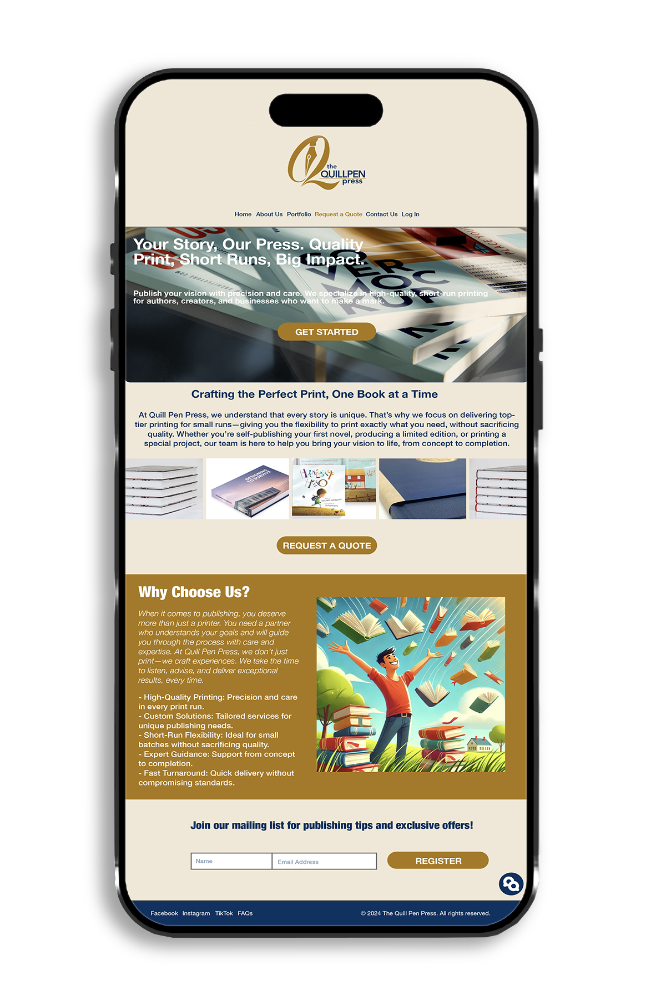
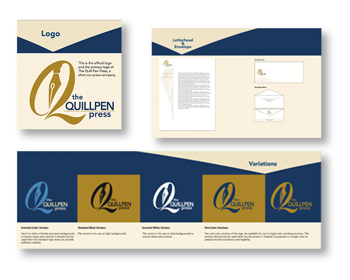

Only the homepage design was required for this project. The design was created to reflect professionalism and creativity within the printing industry. A neutral color scheme with gold accents conveys elegance and reliability. The structured layout highlights key services, while clear call-to-action buttons encourage user engagement. High-quality images of printed materials reinforce the brand’s expertise, and the “Why Choose Us?” section builds trust with potential clients. The overall design ensures clarity, accessibility, and a visually appealing first impression. This presentation was created using Adobe XD. The goal was to develop a visual concept for the homepage, focusing on layout, color palette, and brand communication—rather than full site navigation or functionality.

This project focused not only on designing the homepage for The Quill Pen Press, but also on developing the brand’s complete visual identity. This included the creation of the logo and corporate stationery such as the envelope, business card, and letterhead. Additionally, a brand manual was created to define the guidelines for using the logo, typography, color palette, and other graphic elements, ensuring visual consistency across all brand materials. Adobe Illustrator was used to design the logo and stationery, while Adobe InDesign was used to create the brand manual. The homepage design was created separately using Adobe XD, focusing purely on layout and brand presentation.